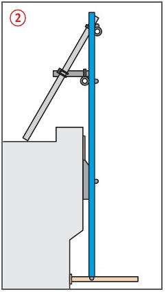
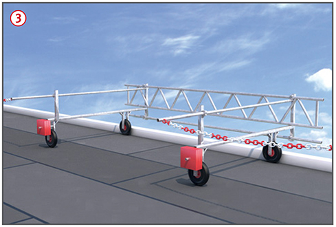
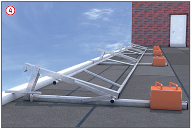

Fehlende Sicherungsmaßnahmen bei der Montage an der Absturzkante können zu Absturzunfällen führen.
Nichteinhaltung der maximalen Abstände tragender Stützen sowie der vorgeschriebenen Ballastierung können zum Versagen des Systems führen.
Allgemeines
Für den Einsatz von Systemen
zur Absturzsicherung auf oder
an Flachdächern gilt es eine
Systemauswahl anhand örtlicher
Gegebenheiten, z. B.:
Dachbelastung,
Dachneigung,
Attikaform und -abmessungen,
max. Gebäudehöhe (Wind)
zu treffen.
Es gibt Systeme mit Ballastierung
oder mit Befestigung direkt am Bauwerk .
Aufbau- und Verwendungsanleitung des Herstellers beachten und an der Baustelle bereithalten.
Betriebsanweisungen erstellen und die Beschäftigten unterweisen.

Schutzmaßnahmen
Flachdach-Absturzsicherungssysteme dürfen nur unter Aufsicht
einer fachkundigen Person auf-, ab- oder umgebaut werden.
Nur längere zusammenhängende Abschnitte möglichst
an allen Dachkanten montieren. Häufiges Umsetzen vermeiden.
Nicht gesicherte Bereiche mit Kette, Seil, Gitter o. Ä.
im Abstand ≥ 2,00 m von der Absturzkante deutlich absperren .
Beim Hochnehmen von Einzelstützen, z. B. für die Verlegung durchgehender Bahnen, Maximalabstände tragender Stützen nicht überschreiten, sonst zusätzliche Stützen ein setzen.
Sicherungsvorkehrungen bei hohen Windgeschwindigkeiten treffen,
z. B. Systeme umklappen oder ggf. demontieren.
Systeme nur absturzgeschützt montieren:
in mindestens 2,00 m Abstand
von der Absturzkante aufbauen und unter dem Schutz des Systems versetzen oder
unter Anseilschutz an ausreichend tragfähigen Anschlageinrichtungen.


Prüfungen
Flachdach-Absturzsicherungssysteme
sind nach der Montage
und nach dem Umsetzen des
Systems von einer "zur Prüfung
befähigten Person" zu prüfen.
Vor Arbeitsbeginn Kontrolle
durch fachkundige Person, insbesondere
die Ballastierung.